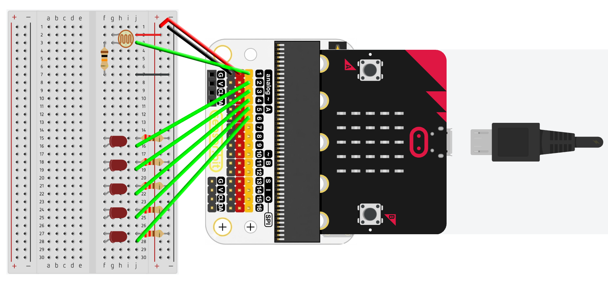
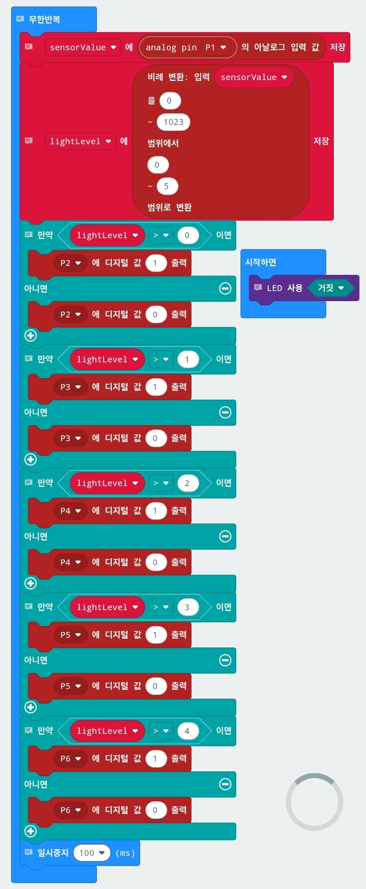

💡 빛을 숫자로 바꾸는 마법
마이크로비트와 CdS 센서를 활용한 '5단 광량계' 만들기 탐구 활동
🔑 수업 핵심 키워드
0. 센서의 확장: 아날로그 센서
MakeCode의 한계를 넘어서
이전 시간에 우리는 마이크로비트에 센서를 연결해서 여러가지 실험을 할 수 있다는 것을 배웠어. MakeCode를 이용하면 아주 간단한 블록 코딩으로 다양한 센서를 제어할 수 있었지. 하지만 내가 산 센서를 블록이 지원하지 않는다면 어떻게 해야 할까? 이제 마지막 단계야. 이번 수업을 마치면 이제 우리는 어떤 아날로그 센서를 가져와도 직접 마이크로비트에 연결해서 원하는 값을 읽어올 방법이 있다는걸 알게될거야. 걱정하지마, 엄청난 코딩을 하거나 하진 않아. 센서의 원리만 알면 쉬울거야.
1. 아날로그 신호의 이해: 0과 1 사이의 무한한 세계
아날로그? 낡고 옛날 것 아닌가요?
디지털(Digital) 세계, 이젠 우리에게 너무 익숙한 말이야. 버튼을 누르면 켜지고(1), 떼면 꺼지는(0) 명확한 세계지. 하지만 우리가 사는 현실은 그렇지 않아. "오늘은 덥니?"라고 물었을 때 "네/아니요"로만 대답할 수 없잖아? "조금 더워", "엄청 더워", "미칠 듯이 더워"처럼 연속적인 값이 필요해. 그 연속적인 신호를 우리는 아날로그(Analog) 신호라고 불러. 이번 수업의 첫 번째 목표는 바로 이 연속적인 아날로그 세상으로 떠나는 거야.

아날로그 vs 디지털 신호 비교 이미지
아날로그 신호를 받는 마이크로비트는 사실 그 신호를 바로 이해할 수는 없어. 왜냐하면 마이크로비트도 디지털 기반의 컴퓨터이기 때문이지. 그래서 아날로그 신호를 디지털로 번역해야 해. 마이크로비트는 이 아날로그 신호를 0부터 1023까지의 숫자로 번역해서 이해해. 왜 하필 1023일까? 이건 마이크로비트의 뇌 속에 있는 ADC(Analog-to-Digital Converter)라는 번역기가 10비트(bit), 그러니까 2진법 10자리 숫자 표현이 가능하기 때문이야. 2의 10제곱은 1024니까, 0을 포함하면 1023까지 잴 수 있는 거지.

아날로그의 디지털 변환
왜 센서가 중요한가?
센서를 다룬다는 건 컴퓨터에게 감각 기관을 선물하는 것과 같아. 키보드나 마우스 없이도 컴퓨터가 스스로 주변 환경(빛, 소리, 온도)을 느끼게 하는 거지. 이번에 다룰 조도 센서(CdS)는 정말 직관적이야. 손으로 가리면 어두워지고, 손을 떼면 밝아져. 너희가 만든 회로가 살아서 움직일 거야! 😊
마이크로비트에 눈👀 달아주기
이번 시간에는 CdS 조도 센서를 마이크로비트에 연결해서, 마이크로비트가 빛을 감지하고 주변 밝기를 LED로 표현하는 회로를 직접 만들거야. 하지만, 단순히 센서를 연결하는게 전부가 아니야. 센서가 어떻게 신호를 보내고, 컴퓨터는 어떻게 그 신호를 해석하는지 오늘 활동을 하고 나면 완벽하게 이해하게 될거라고!
⚡ 핵심 개념2: 아날로그 센서는 전압으로 신호를 보내고, 마이크로비트는 ADC를 통해 전압을 1024단계의 숫자로 해석합니다.
2. 전압 분배 법칙: 보이지 않는 저항을 낚아채는 기술
CdS 센서의 비밀
자, 여기서부터가 오늘의 승부처야. 많은 학생들이 CdS 센서를 그냥 핀에 꽂으면 된다고 생각하는데, 절대 아니야! CdS는 빛을 받으면 저항이 줄어들고, 어두우면 저항이 커지는 가변 저항(Variable Resistor)일 뿐이야. 저항 자체는 전기를 만들어내지 못해. 그래서 마이크로비트가 읽을 수 있는 '전압의 크기'로 바꿔주는 장치가 필요한데, 그게 바로 전압 분배 회로란다.
회로 구조는 간단해. 먼저 CdS 저항과 10kΩ 저항을 직렬로 연결하고, 3.3V의 전압(마이크로비트가 만들어 줄 거야.)을 걸어줘. 그리고 CdS 저항과 10kΩ 저항 사이에 선을 하나 꼽고 마이크로비트의 P0라고 하는 핀에 연결하면 돼. 대충 그려지니? 자세한 방법은 뒤에서 다시 알려줄 거야.
10kΩ 저항은 왜 필요할까?
CdS 혼자서는 아무리 저항이 변해도, 3.3V와 GND 사이에 혼자 연결되면 전압은 항상 3.3V로 일정해(옴의 법칙). 그래서 파트너 저항(고정 저항, 보통 10kΩ)이 꼭 필요해! 🤝
상상해 봐. 3.3V라는 낙차를 가진 물줄기가 흐르는데, 위에는 CdS가, 아래는 10kΩ 저항이 버티고 있어. 둘이 서로 3.3V라는 전압을 나눠서 버티는 거야. 빛이 밝아지면 CdS의 저항이 약해져서 아래쪽 10kΩ 쪽으로 더 많은 전압이 쏠리게 돼. 반대로 빛이 어두워지면 CdS의 저항이 커지면서 10kΩ 쪽의 전압은 줄어들지. 마이크로비트는 바로 그 중간 지점의 전압을 들여다보는 거지.
📐 전압 분배 공식
- 빛이 밝으면: RCdS ↓ → Vout ↑ → 아날로그 값 ↑
- 빛이 어두우면: RCdS ↑ → Vout ↓ → 아날로그 값 ↓
✏️ 실습 활동: 전압 분배 계산해보기
빛의 세기에 따른 저항값과 전압을 직접 계산해보세요!
단, Vin = 3V, Rfixed = 10kΩ
⚡ 핵심 개념2: 전압 분배 회로를 이용하면 CdS의 저항값을 전압으로 변환하는 일종의 조도 센서를 만들 수 있습니다.
3. 실전 회로 구성: 브레드보드 위에 구현되는 몸체
준비물 체크리스트 🛠️
- 마이크로비트 & 확장 보드: 두뇌 & 두뇌를 몸과 연결하는 신경망!
- 브레드보드(빵판): 납땜 없이 부품을 꽂아 회로를 구성하는 편리한 빵판.
- CdS 저항 1개: 빛을 감지하는 주인공.
- 10kΩ 저항 1개 (갈검주): 전압 분배를 위한 핵심 파트너. (220Ω이랑 헷갈리면 안 돼!)
- LED 5개: 빛의 세기를 보여줄 출력 장치.
- 220Ω 저항 5개 (빨빨갈): LED가 타지 않게 지켜주는 보디가드.
단계별 조립 가이드
Step 1: 입력부 (센서) 연결
CdS의 한쪽은 3V에, 다른 쪽은 10kΩ 저항과 만나게 꽂아줘. 여기서 점퍼선을 뽑아서 마이크로비트의 P1 핀에 꽂아줘. 그리고 10kΩ 저항의 반대쪽
다리는 GND로 보내줘. (3V - CdS - P1 - 10kΩ - GND 순서)
Step 2: 출력부 (LED) 연결
LED 5개를 일렬로 꽂고 긴 다리(+)는 마이크로비트의 P2, P3, P4, P5, P6 핀에 각각 연결. 짧은 다리(-)는
220Ω 저항을 하나씩 달아서 모두 GND 라인으로!

4. 소프트웨어 로직: 마이크로비트 안에 구현되는 정신
맵핑(Mapping): 수학을 코딩으로
센서 값은 0에서 1023까지 변하는데, 우리가 가진 LED는 고작 5개뿐이야. 이 거대한 숫자를 6단계(0~5)로 어떻게 줄일 수 있을까? 여기서 '맵핑(Mapping)'이라는 멋진 스킬이 등장해.
MakeCode에 있는 값 변환 블록을 쓰면 돼. "0부터 1023까지의 값을 0부터 5까지의 범위로 바꿔줘!"라고 명령하는 거지. 수학적으로는 비례식을 쓰는 건데, 코딩으로는 블록 하나면 끝이야. 이렇게 변환된 값을 변수에 저장해두고, 그 변수를 조건으로 LED를 켜주면 돼. 스마트 하지? 😎
LED를 켜는 조건은 어떻게 정하나요? 조건문(if)의 마법
센서가 보낸 값에 따라 LED를 켜는 로직을 짜기 위해선 간단한 조건문이면 충분해. "만약(If) 센서 값이 1보다 크면 첫 번째 LED 켜기, 아니면 끄기. 2보다 크면 두 번째 LED 켜기, 아니면 끄기." 이걸 5번 반복하는 거지. 조금 노가다(?) 같지만, 조건문의 원리를 이해하는 데는 아주 좋은 방법이지. 프로그래밍을 더 공부하면 더 세련된 조건문을 작성할 수도 있겠지?
LED를 어떻게 켜나요?
LED를 켜려면 "핀" 메뉴로 들어가서 디지털 값 출력 블록을 찾아야 해. 이 블록으로 각 LED가 연결된 핀(P1, P2, P8, P12, P16)에 1(켜기) 또는 0(끄기)을 출력하는 거지. 핀에 1을 출력한다는 것은 3.3V의 전압을 걸어준다는 의미야. 그러면 LED가 켜지겠지? 💡
📱 카메라로 QR코드를 스캔하여 펌웨어(.hex) 다운로드

MakeCode 코딩 블록 구조
5. 선생님, 이거 안돼요! 실패는 성공의 어머니?
흔한 실수 TOP 3 ⚡
1. 저항 색깔 실수
"선생님, 값이 안 변해요!" → 십중팔구 10kΩ 자리에 220Ω을 꽂았을 거야. 저항 띠 색깔(갈검주 vs 빨빨갈)을 눈 크게 뜨고 꼭 확인해!
2. LED 극성 반대
"선생님, 불이 안 켜져요!" → LED는 다이오드라서 전기가 한 방향으로만 흘러. 긴 다리가 플러스(+) 쪽을 향했는지 확인해 봐.
3. 빵판의 배신
브레드보드 내부의 금속핀이 헐거워서 접촉 불량이 날 때가 있어. 회로가 완벽한데 안 된다면, 부품을 살짝 꾹꾹 눌러보거나 자리를 옆으로 옮겨 보기!
✨ 수업 마무리 및 확장
- 잘 성공했니? 이번 수업을 통해 '입력(센서) → 처리(로직) → 출력(LED)'이라는 컴퓨터의 기본 작동 원리를 완벽하게 체험했어.
- 확장 과제로 '어두우면 켜지는 가로등'을 만들어보는건 어때? 논리적 사고력이 쑥쑥 자라날 거야!